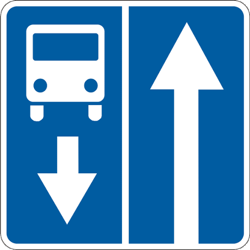
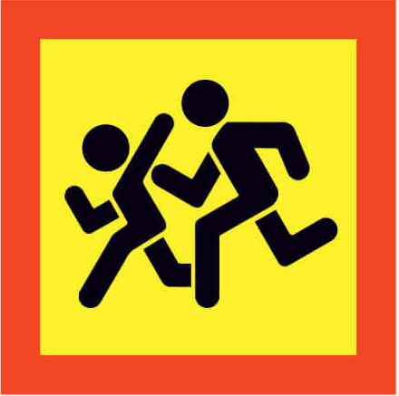
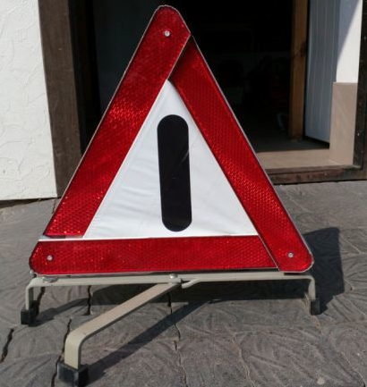

9.1. Попереджувальними сигналами є:
а) сигнали, що подаються світловими покажчиками повороту або рукою;
б) звукові сигнали;
в) перемикання світла фар;
г) увімкнення ближнього світла фар у світлу пору доби;
ґ) увімкнення аварійної сигналізації, сигналів гальмування, ліхтаря заднього ходу, розпізнавального знака автопоїзда;
д) увімкнення проблискового маячка оранжевого кольору.
9.2. Водій повинен подавати сигнали світловими покажчиками повороту відповідного напрямку:
а) перед початком руху і зупинкою;
б) перед перестроюванням, поворотом або розворотом.
9.3. У разі відсутності або несправності світлових покажчиків повороту сигнали початку руху від правого краю проїзної частини, зупинки зліва, повороту ліворуч, розвороту або перестроювання на смугу руху ліворуч подаються лівою рукою, витягнутою вбік, або правою рукою, витягнутою вбік і зігнутою у лікті під прямим кутом угору.
Сигнали початку руху від лівого краю проїзної частини, зупинки справа, повороту праворуч, перестроювання на смугу руху праворуч подаються правою рукою, витягнутою вбік, або лівою рукою, витягнутою вбік і зігнутою у лікті під прямим кутом угору.
У разі відсутності або несправності сигналів гальмування такий сигнал подається лівою або правою рукою, піднятою вгору.
9.4. Подавати сигнал покажчиками повороту або рукою належить завчасно до початку маневру (з урахуванням швидкості руху), але не менш як за 50-100 м у населених пунктах і за 150-200 м поза ними, і припиняти негайно після його закінчення (подавання сигналу рукою слід закінчити безпосередньо перед початком виконання маневру). Сигнал забороняється подавати, якщо він може бути не зрозумілим для інших учасників руху.
Подавання попереджувального сигналу не дає водієві переваги і не звільняє його від вжиття запобіжних заходів.
9.5. Подавати звукові сигнали у населених пунктах забороняється, крім випадків, коли без цього неможливо запобігти дорожньо-транспортній пригоді.
9.6. Для привертання уваги водія транспортного засобу, який обганяється, можна застосовувати перемикання світла фар, а поза населеними пунктами – і звуковий сигнал.
9.7. Забороняється користуватися дальнім світлом фар як попереджувальним сигналом в умовах, коли це може призвести до засліплення інших водіїв, у тому числі через дзеркало заднього виду.
9.8. Під час руху механічних транспортних засобів у світлу пору доби з метою позначення транспортного засобу, що рухається, ближнє світло фар повинно бути увімкнене:
а) у колоні;
б) на маршрутних транспортних засобах, що рухаються по смузі, позначеній дорожнім знаком 5.8, назустріч загальному потоку транспортних засобів;

5.8
в) на автобусах (мікроавтобусах), що здійснюють перевезення організованих груп дітей;
г) на великовагових, великогабаритних транспортних засобах та транспортних засобах, що здійснюють дорожнє перевезення небезпечних вантажів;
ґ) на транспортному засобі, що буксирує;
д) у тунелях.
З 1 жовтня по 1 травня на всіх механічних транспортних засобах поза населеними пунктами повинні бути ввімкнені денні ходові вогні, а в разі їх відсутності в конструкції транспортного засобу – ближнє світло фар.
В умовах недостатньої видимості на механічних транспортних засобах можна ввімкнути дальнє світло фар або додатково протитуманні фари за умови, що це не буде засліплювати інших водіїв.
9.9. Аварійна світлова сигналізація повинна бути ввімкнена:
а) у разі вимушеної зупинки на дорозі;
б) у разі зупинки на вимогу поліцейського або внаслідок засліплення водія світлом фар;
в) на механічному транспортному засобі, що рухається з технічними несправностями, якщо такий рух не заборонено цими Правилами;
г) на механічному транспортному засобі, що буксирується;
ґ) на механічному транспортному засобі, позначеному розпізнавальним знаком “Діти”, що перевозить організовану групу дітей, під час їх посадки чи висадки;

Знак «Діти»
д) на всіх механічних транспортних засобах колони під час їх зупинки на дорозі;
е) у разі скоєння дорожньо-транспортної пригоди.
9.10. Разом з увімкненням аварійної світлової сигналізації слід установити знак аварійної зупинки або миготливий червоний ліхтар на відстані, що забезпечує безпеку дорожнього руху, але не ближче 20 м до транспортного засобу в населених пунктах і 40 м поза ними, у разі:

Знак «Аварійної зупинки»
а) скоєння дорожньо-транспортної пригоди;
б) вимушеної зупинки в місцях з обмеженою оглядовістю дороги хоча б в одному напрямку менше 100 м.
9.11. Якщо транспортний засіб не обладнано аварійною світловою сигналізацією або вона несправна, треба встановити знак аварійної зупинки або миготливий червоний ліхтар:
а) ззаду на транспортному засобі, зазначеному в пункті 9.9 (“в”, “г”, “ґ”) цих Правил;
б) з боку гіршої видимості для інших учасників дорожнього руху у випадку, зазначеному в підпункті “б” пункту 9.10 цих Правил.
9.12. Миготливе червоне світло, випромінюване ліхтарем, який застосовується відповідно до вимог пунктів 9.10 і 9.11 цих Правил, повинно бути добре видно як удень за сонячної погоди, так і в умовах недостатньої видимості.